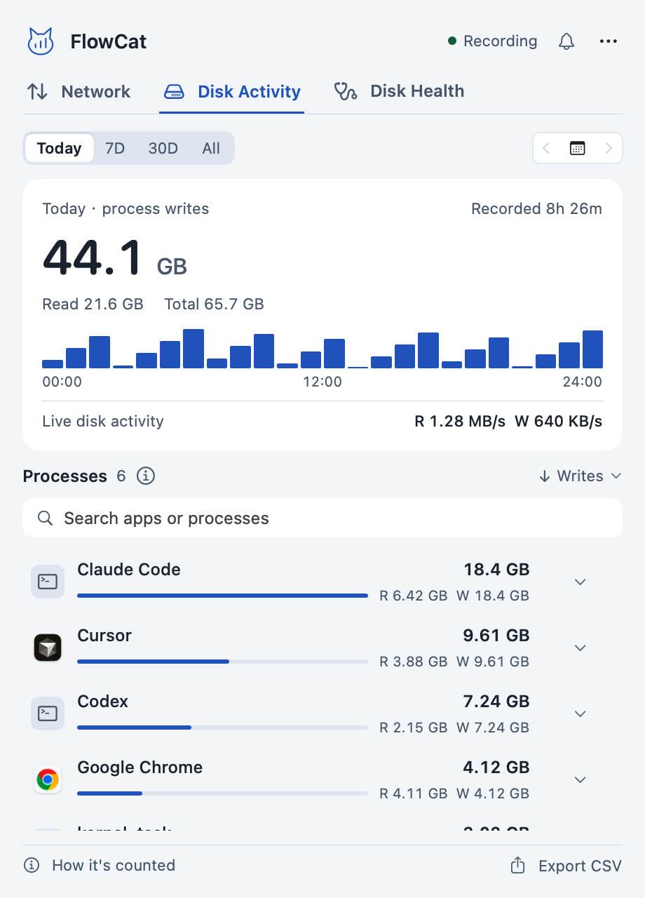
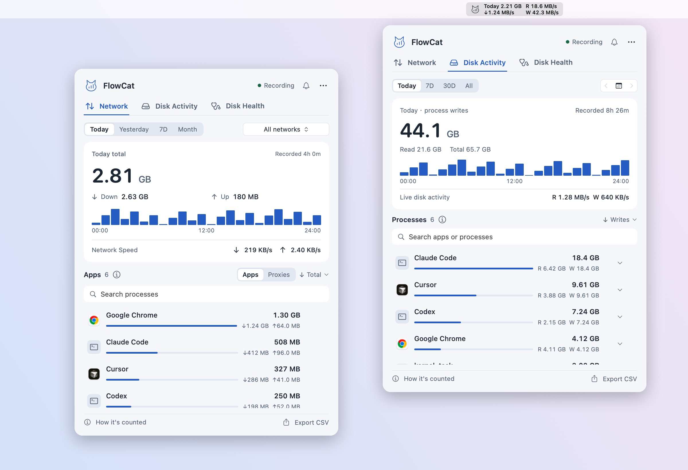
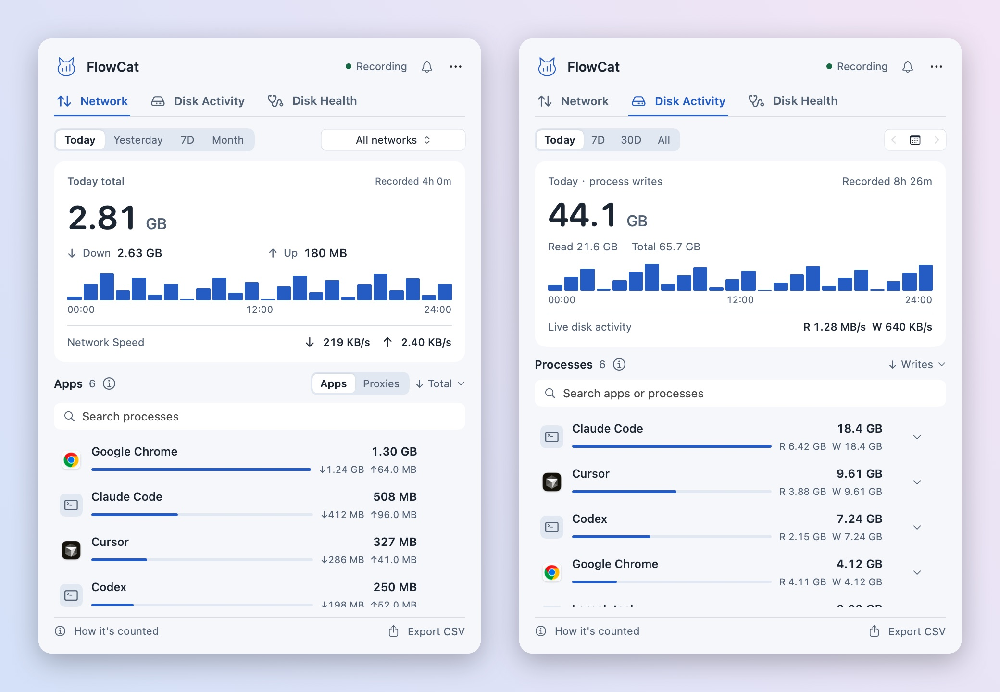
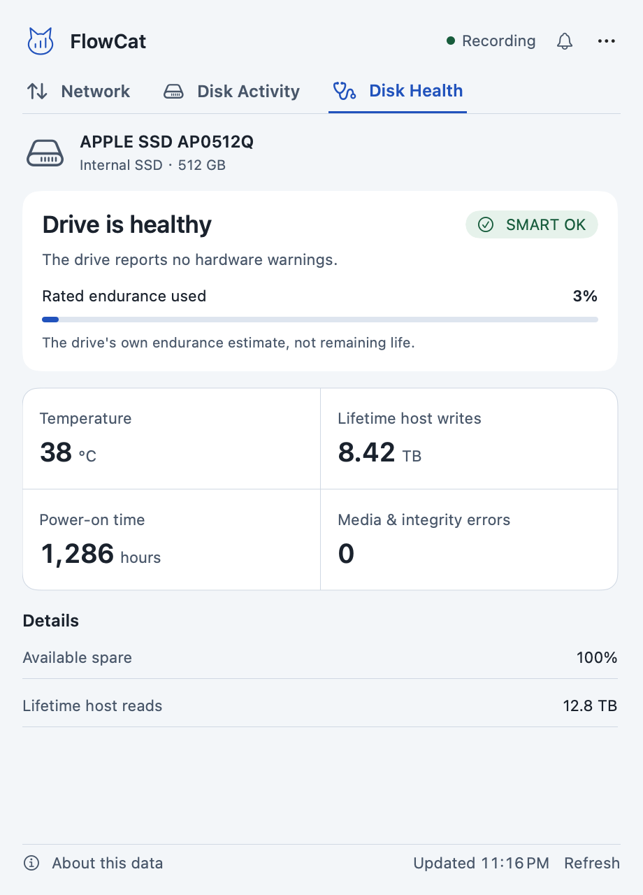
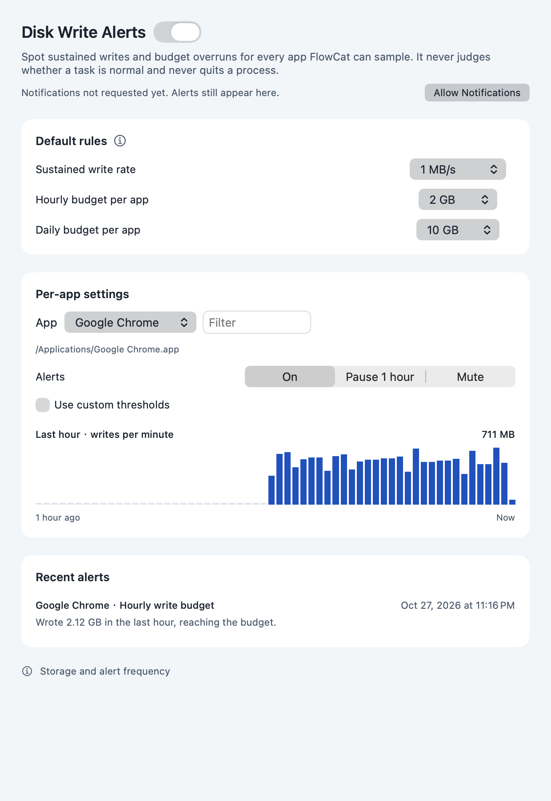
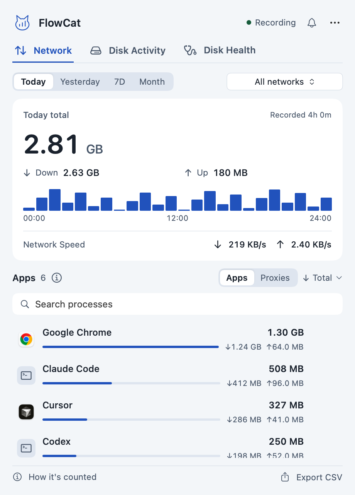
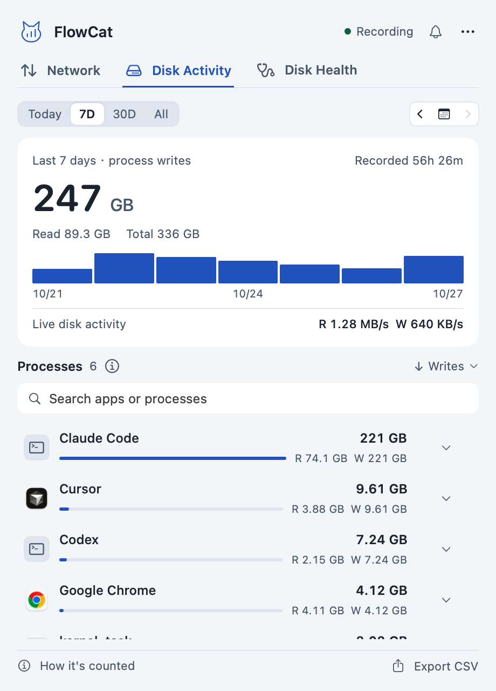
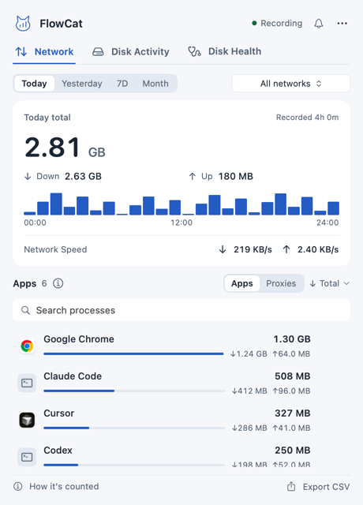

Per-process disk activity
Today, 7 days, 30 days, all time or any single day. Sort by writes, reads or total, search, and click a row to see the path.

Live speed, per-process disk writes and SMART health. See which AI coding tools are wearing out your SSD.

Agents rebuild indexes, caches and node_modules all day. FlowCat ranks every process by network traffic and by disk writes, side by side.

Codex, Claude Code, Cursor, build tools and Spotlight all show up with read and write totals per app, merged with their helper processes.
Compare what processes wrote with the SSD's own lifetime host writes, temperature and rated endurance used.
Three tabs, no windows to manage. Open the panel, find the answer, close it.
Today, 7 days, 30 days, all time or any single day. Sort by writes, reads or total, search, and click a row to see the path.

Show today's total, network speed and disk read/write speed. Turn each on or off.
Status, temperature, lifetime host writes, rated endurance used, power-on hours and media errors. Read natively, no smartctl.

Get notified about sustained high writes or an app exceeding an hourly or daily budget. Pause or mute any app.

Today, yesterday, 7 days or this month, filtered by the real Wi-Fi name. Proxies and VPNs are listed separately so nothing is counted twice.

FlowCat samples every 10 seconds and saves every minute, so you can look back instead of guessing.

Network, disk activity, a 7-day trend and disk health, as they appear in the panel.

macOS 13 or later on Apple Silicon.
Get the latest ZIP from GitHub Releases. It is under 1 MB.
Unzip and drag FlowCat into your Applications folder.
Open FlowCat and click its menu bar icon. The first 10 seconds build a baseline.
FlowCat is ad-hoc signed and not notarized yet. If macOS blocks the first launch, allow it under System Settings, Privacy & Security. You never need to turn off system protections.
No. History is stored in ledger.json and disk-ledger.json on your Mac. There is no account and no telemetry, and FlowCat never records the contents of your traffic. Checking for updates only happens when you ask and contacts GitHub.
It samples every 10 seconds, saves once a minute and loads the panel only when you open it. SMART data is read on demand and then about every 10 minutes.
Not exactly. Process writes come from macOS counters and are not the physical NAND writes inside the SSD. Use them to find which apps write the most, and the health tab for what the drive itself reports.
No. Totals come from the physical network interfaces and include LAN and protocol overhead. Short-lived processes and network switches can be missed, so treat it as a guide, not a carrier bill.
No. Choose Check for Updates, then Install and Relaunch. FlowCat downloads and verifies the package, replaces itself and keeps your history and settings. If anything fails, the previous version is restored.
Yes to both. Switch the language to 简体中文 in Settings. A separate Windows version lives in its own repository.